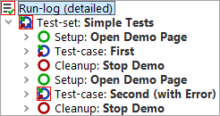

| Version 6.0.3 |
After we have seen how the single elements of the test-set work, let us have a look at the functionality provided by the test-set node.
The result dialog will come up after test execution, informing us about the error caused by the second test-case.
|
|  | ||
|
| Figure 10.16: Run-Log for the Completed Test-set | ||
This shows the special behavior of Setup / Cleanup nodes in a test-set: They are executed before and after each test-case to help achieving a proper starting state for each test-case.
Note Stopping the SUT after each test-case is not the smartest way to ensure a clean state. There are more elegant ways for setup and clean-up that will be explained with the advanced features in this tutorial (chapter 29).
| Last update: 9/6/2022 Copyright © 2002-2022 Quality First Software GmbH |